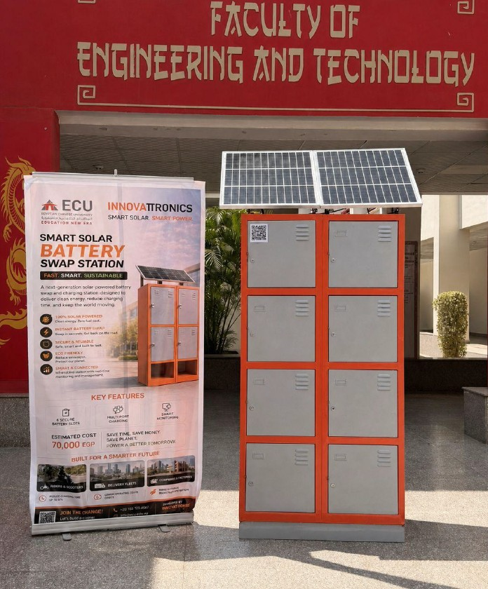

⚡ Smart Hybrid Charging Station
Gallery

Final Prototype of the Smart Hybrid Charging Station
Overview
The Smart Hybrid Charging Station is an intelligent charging platform designed to charge battery systems using both solar energy and grid power. The system integrates real-time monitoring, energy management, and IoT technologies to provide safe, efficient, and reliable charging operations. The project combines power electronics, embedded systems, and renewable energy technologies into a single smart charging solution.
Objectives
- Develop a smart battery charging station.
- Integrate solar and grid power sources.
- Monitor charging parameters in real time.
- Improve charging efficiency and safety.
- Implement IoT-based monitoring capabilities.
- Support multiple charging scenarios.
Key Features
- Hybrid Solar & Grid Power Operation.
- ESP32-Based Monitoring System.
- Real-Time Voltage Monitoring.
- Current Measurement & Protection.
- Temperature Monitoring.
- Multi-Slot Charging Support.
- IoT Dashboard Integration.
- Fault Detection & Protection.
- Energy Management System.
- Remote Monitoring Capability.
System Architecture
- Solar Panel Energy Source.
- Hybrid Inverter System.
- ESP32 Controller.
- Voltage Sensors.
- Current Sensors.
- Temperature Sensors.
- Battery Charging Modules.
- Protection Circuits.
- IoT Monitoring Dashboard.
- PCB-Based Control Circuit.
Technologies Used
- ESP32
- MATLAB / Simulink
- IoT Technologies
- Solar Energy Systems
- Power Electronics
- PCB Design
- Embedded Systems
- Voltage & Current Sensors
- Temperature Monitoring
- Hybrid Inverter Systems
Challenges & Solutions
-
Challenge:
Managing multiple power sources efficiently.
Solution: Implemented a hybrid architecture combining solar energy and grid power. -
Challenge:
Monitoring charging parameters accurately.
Solution: Integrated voltage, current, and temperature sensors with ESP32. -
Challenge:
Ensuring charging safety and protection.
Solution: Added fault detection and protection mechanisms.
Results
- Successful implementation of hybrid charging operation.
- Reliable monitoring of charging parameters.
- Stable integration between solar and grid power.
- Improved charging efficiency and safety.
- Real-time IoT monitoring capabilities.
- Functional prototype with practical deployment potential.
Future Improvements
- Mobile Application Integration.
- AI-Based Energy Optimization.
- Cloud-Based Monitoring Platform.
- Predictive Maintenance Features.
- Advanced Data Analytics.
- Support for Larger Charging Networks.